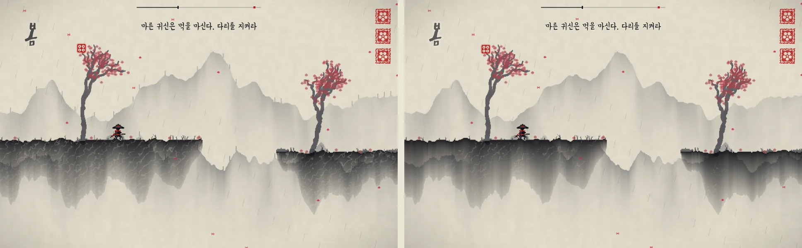
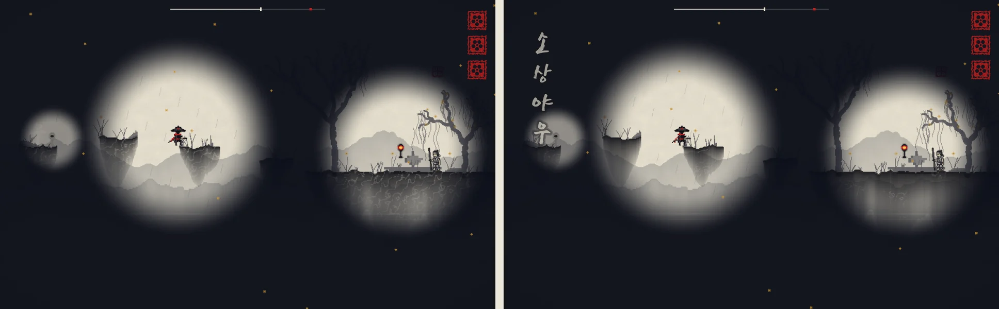
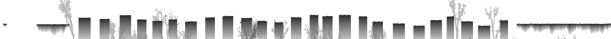

스팀의 최근 게임과 예전 비슷한 게임에 견주어 냉정하게 매긴 점수예요. 평가할 때마다 날짜 한 칸이 늘어요.
관점
11.12
근거
평균
11.13 1시
디자인만 따로 봤어요. 땅이 무늬보다 먹 덩어리로 먼저 읽히고, 글씨가 나무 위에서도 읽혀요
Codex에게 화면 14장을 주고 디자인 70%·나머지 30%로 매기게 했어요. 7.1 → 고친 뒤 7.5(디자인만 7.3 → 7.7). 위 표와 잣대가 달라 표에는 넣지 않았어요.
이번에 바뀐 것
땅 속 금
바위 전체에 깔리던 하얀 물결 금을 군데군데만 짧게 남겼어요. 산수화 준법의 "획 사이를 비워라"와 픽셀 그림의 "가장 센 대비는 주인공에게"를 따랐어요.
글씨가 나무에 가리지 않게
맵 이름과 위쪽 안내 글 둘레에 바탕빛을 옅게 깔았어요. 밤 맵 소상야우에서는 이름이 어둠에 덮여 안 보였는데, 어둠 위에 쓰게 고쳤어요.
지운 것
먼 산 능선마다 솟아 안테나처럼 보이던 막대를 지우고, 화첩에서 장 그림을 3분의 1이나 덮던 등급 낙관을 귀퉁이로 줄였어요.

봄. 왼쪽이 전, 오른쪽이 뒤.

소상야우. 맵 이름이 어둠 위로 올라왔어요.
남은 것
나무 잔가지·해송생성된 무늬처럼 보인다는 지적(Codex·상점 첫인상) — 틀을 깬 새 디자인을 찾는 중
밤 등불 빛등불 사이 어둠을 건너는 것이 놀이라 그대로 둠
11.12 7시
다른 AI 셋에게 다른 관점으로 물어 고쳤어요. 이야기가 플레이 중에도 보이고, 한국 고증이 단단해졌어요
셋째 바퀴예요. 평균 6.5 → 6.6(이 페이지의 같은 잣대). Codex 종합은 6.5 → 6.8. 상점 그림 6장만 본 게이머 입장 평가(ChatGPT)는 7.2, 대사 고증은 Gemini Pro가 봤어요. 재미봇 220판 결과로 맵을 고치고, 고친 맵은 다시 5판씩 돌렸어요.
이번에 바뀐 것
표식 곁 사람
맵 끝에서 말을 걸 사람이 플레이 중에 먼저 보여요. 소상야우·어촌낙조의 매인 배 곁에 뱃사공, 연사모종 일주문 앞에 스님, 청간정 정자와 죽서루 누각에 선비가 작게 서 있어요.
고증
연사모종 아래 문이 일본 신사 문처럼 보여 기와지붕 일주문으로 바꿨어요. 대사의 근대어(저수지→방죽)와 번역투를 고치고, 실제 죽서루는 폭포가 아니라 오십천 벼랑이라 선비의 말을 바꿨어요.
재미봇이 짚은 곳
보스 바로 앞에 귀신이 몰려 같은 자리에서 20번 맞던 곳에 쉼을 두고, 돌기둥귀는 친 뒤 물러나 쉬어요. 먹이 모자라 오래 서 있던 총석정 틈을 좁히고, 시작이 빈 청간정에 귀신을 앞당겼어요.
붓이 보이는 그림
게이머 평가에서 "붓으로 다리를 긋는 장면이 한 장도 없다"는 말을 듣고, 굵게 그은 다리를 건너고 빠른 획으로 베는 화면을 기획서 맨 위에 넣었어요.
아직 8점에 못 미치는 까닭
사람의 플레이 기록이 없다베기와 가두기를 골라 쓰는지, 총석정·청간정에서 막히는지
귀신 이름 셋그림자 무사·우산귀·눈치귀가 일본풍·현대어로 읽힐 수 있어 고를 일이 남음
소리를 들어 본 사람이 없다날씨 소리 크기·되풀이 피로
조작은 그대로마우스 필수, 게임패드 없음
11.12 5시
그림이 맵마다 확실히 달라지고, 소리가 처음으로 맵을 채웠어요. 재미와 난이도는 여전히 사람 손이 필요해요
둘째 바퀴예요. 평균 5.8 → 6.5(이 페이지의 같은 잣대). 외부 평가로 같이 본 Codex 점수는 6.4 → 6.5, 이야기만 따로 매긴 점수는 7.1 → 7.5예요. 재미봇(사용자 손을 흉내 낸 봇)을 맵마다 5판씩 돌린 결과로 맵을 고쳤고, 고친 맵은 다시 5판씩 돌려 봤어요.
이번에 바뀐 것
소나무와 돌기둥
둥근 먹 덩이 같던 나무가 바다 쪽으로 굽은 해송이 되었어요. 납작한 솔잎 층이 얹히고, 눈 오는 맵은 솔잎 위에 눈이 남아요. 총석정 기둥은 막대그래프 같던 회색 판에서 기둥마다 짙기·모서리·마디 금이 다른 육각 기둥으로 바뀌었어요.
가두기에 이유가 생김
귀신 하나를 가두면 둘레 귀신이 잠깐 잿빛으로 멎어요(먹 울림). 2·3장에도 베어지지 않는 안개귀를 무리 한가운데에 두어, 가운데를 가두고 둘레를 한 획에 베는 장면이 나오게 했어요.
반복 없애기
위로 오르는 맵 두 장(연사모종·죽서루)은 같은 돌 무늬가 여섯 번 복사돼 있었어요. 넓은 계단 → 좁은 지그재그 → 점프보다 높은 돌 → 섞기로 다시 놓고, 죽서루에는 폭포 가운데 바위를 뛰어 건너는 쉼을 넣었어요. 삼일포 연잎도 너비·높이를 섞어 복사를 없앴어요.
소리
날씨 소리 파일이 하나도 없어 바깥 소리가 비어 있었어요. 파도·봄비·폭우·가을바람·강물·눈바람·폭포·밤 호수를 받아 섞어 맵 15가지에 깔았고, 2장은 강, 3장은 바다, 월송정은 고향 곡이 흘러요.
이야기
평사낙안에서 어머니가 "네가 크면, 네 눈으로 보렴" 하던 말이 월송정에서 "이제 네 눈으로 보는구나"로 돌아와요. 등불 들고 징검돌을 건너던 색시, 눈덩이 둑, 한 걸음 늦던 그림자처럼 맵에서 한 일이 장면에 나와요. 산시청람 할머니, 경포대 주모가 따로 생기고, 원포귀범 뱃사공이 "댁 얼굴이 그 젊은이를 꼭 닮았구려" 하고 단서를 줘요.
아직 8점에 못 미치는 까닭
사람의 플레이 기록이 없다베기와 가두기를 실제로 골라 쓰는지, 처음 10분을 통과하는지
월송정 보스전봇이 같은 자리에서 20번 맞아요
소리를 들어 본 사람이 없다날씨 소리 크기·되풀이 피로
조작은 그대로마우스 필수, 게임패드 없음
11.12 3시
반복은 크게 줄었고, 이야기와 첫인상이 좋아졌어요. 재미는 아직 사람 손으로 확인 전이에요
밤새 세션 둘이 나눠 맡아 평가 → 래퍼런스 → 고치기를 돌린 첫 바퀴예요. 평균 4.8 → 5.8(이 페이지의 같은 잣대). 외부 평가로 같이 본 Codex 점수는 5.5 → 6.4예요. 사람이 해 본 기록이 없는 부분은 반만 올렸어요.
이번에 바뀐 것
맵마다 기승전결
맵 하나에 생각 하나를 소개 → 키우기 → 비틀기 → 섞기 순서로. 총석정은 다리 대신 비탈로 솟은 기둥을 오르고, 낙산일출은 썰물 때만 드러나는 징검돌을 기다렸다 달려 건너요. 귀신은 같은 순서로 돌리지 않고 손으로 놓았어요(같은 순서 반복 15맵 → 1맵).
맵마다 다른 얼굴
먼 그림이 강·바다 수평선·주상절리 기둥·솔숲으로 갈리고, 청간정 고개의 정자는 안개가 걷히며 드러나요. 월송정 끝에는 달빛 바다가, 낙산일출에는 바다에서 떠오르는 해가 있어요.
이야기를 다시 씀
화공의 어머니 고향이 길 끝 바닷가예요. 비워 둔 마지막 한 폭이 어머니가 말하던 바다가 되고, 1장에서 바다를 그려 달라던 아이가 마지막에 다시 와요. 그림 없이 픽셀 인물(옅은 먹빛의 젊은 어머니·어린 화공)이 연기해요.
처음 화면
표지가 픽셀 장면이 되었어요: 떨리는 손의 화공이 먹을 떨궈 나그네를 그려 내고, 나그네가 병풍 속으로 걸어 들어가요. 화첩에서도 그 나그네가 다음 맵 곁에 서 있어요.
초반 난이도와 손맛
1장이 2장보다 빽빽하던 귀신을 줄이고 쉬는 구간을 두었어요. 짧은 획 연타는 붓이 말라 먹이 두 배로 들고, 한 획에 셋을 베면 먹이 고이는 여운이 남아요.
아직 8점에 못 미치는 까닭
사람의 플레이 기록이 없다봄·여름 초반, 낙산일출 썰물 길이 실제로 어떤지 모름
보스 몇이 너무 짧다청간정·망양정은 봇 기준 6~7초
이야기 장면의 움직임컷 모음처럼 보이지 않게 걷기·등장을 더
소리는 그대로곡 4개, 날씨 소리 없음
11.12 0시
예쁘지만 금방 질리는 게임이 될 가능성이 커요
그림 정체성은 진짜 강점이지만 재미의 핵심이 아직 사람에게 검증되지 않았어요. 근거: 맵 22장 파일 수치, 사용자 플레이 기록 146판, 맵 3장 화면, 스팀 상점 페이지와 리뷰·비평 글. Codex에게 따로 맡긴 평가도 "지금 빌드로는 출시를 권하기 어렵다"였어요.
가장 냉정한 다섯 가지
반복이 숫자로 보여요
맵 22장 중 14장이 귀신 5~7종을 같은 순서로 80~95칸마다 돌려 놓았어요. 총석정은 기러기·먹귀·우산귀·붓털귀·먹귀가 끝까지 6바퀴 돌아요. 땅도 같은 언덕 하나를 5~7번 복사한 맵이 많아요. 먹으로 발판을 긋던 Sumioni(메타크리틱 57)와 그림이 극찬받던 Muramasa가 바로 이 반복으로 깎였어요.
그리기 게임인데 베기 게임으로 굴러가요
처치의 95%가 베기, 얇은 획 70%, 1분에 27~52획. 이 게임만의 동사인 다리·벽·봉인보다 빠른 연타가 통해요. 오카미·크레용 피직스가 한 시간 뒤 장난감처럼 느껴진 까닭과 같아요.
밖의 사람이 0명이에요
기록 146판이 모두 만든 사람 한 명의 판이고, 그런데도 봄 클리어 17%·여름 0%예요. 봇 시험 통과는 고장 나지 않았다는 뜻이지 재밌다는 뜻이 아니에요.
넓히기만 하고 깊게 다듬지 않았어요
귀신 17종 넘게, 큰 귀신 11종, 맵 22장이 있지만 맵 하나를 끝까지 손으로 다듬은 적이 없어요. 수묵풍으로 성공한 Nine Sols·Realm of Ink는 둘 다 전투가 깊었어요.
시장은 차가워요
최근 2년 사이 그려서 길을 내고 그려서 싸우는 게임 중 흥행작을 찾지 못했어요(성공은 퍼즐인 Draw 정도). 한국 전통 소재 인디는 리뷰가 두 자릿수에 머물고, 스팀 게임의 절반은 1,000장도 못 팔아요. 게임패드가 없어 스팀덱 인증도 어렵고, 그림·음악에 AI를 써서 스팀의 AI 사용 고지 대상이에요.

11.12 총석정 전체 지형. 같은 간격의 네모 기둥이 막대그래프처럼 늘어서 있어요.
정확히 강점인 것
멈추지 않는 그리기오카미의 가장 큰 불만(그릴 때 화면이 멈춤)과 Sumioni의 불만(멈춰 서서 먹 채우기)을 둘 다 피했어요.
남는 획쓰인 획으로 품계를 매기고, 깬 맵의 획이 화첩 그림에 스며요. 더 나은 해법에 보상하라는 교훈을 이미 하고 있어요.
세계관 안의 이유왜 먹이 귀신이 되는지, 왜 길 끝이 비어 있는지가 이야기와 맞물려요.
그림 정체성종이·먹·인주 세 가지로 끝까지 일관돼요. 스크린샷 한 장으로 기억에 남아요.
이 평가 뒤에 하는 일
밖의 사람 시험 웹 맛보기판으로 직접 받아 볼게요.
맵 반복 없애기 맵마다 기승전결(마리오 3D 월드의 하야시다 고이치 방식)으로 땅과 귀신을 손으로 다시 놓아요. 맵 하나에 생각 하나를 소개하고, 키우고, 비틀고, 섞어요.